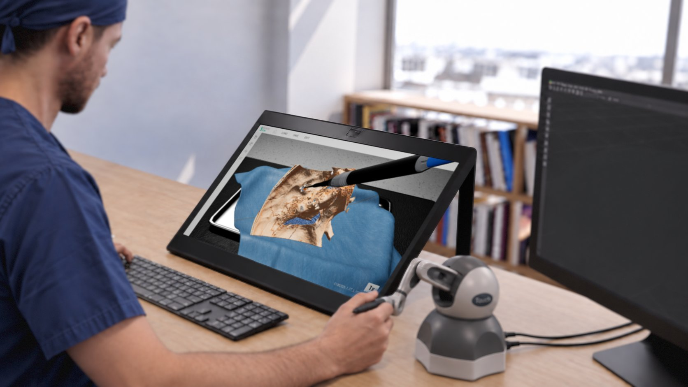
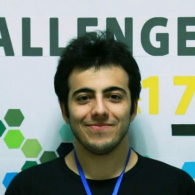

Patient-specific anatomy
Explore and manipulate 3D anatomy built directly from a patient's clinical imaging studies.


Patient-specific surgical simulation for Otolaryngology – Head & Neck Surgery, from the University of Calgary's Ohlson Research Initiative.
Enabling surgeons to perform the best surgery.
To create a suite of applications that provides high-fidelity, interactive, virtual environments to effectively teach, plan and practice Otolaryngology – Head & Neck Surgery.
SurgiSim is a surgical simulation platform for exploring and manipulating patient-specific anatomy derived from clinical imaging. It runs on a desktop computer or a laptop.
Skull base surgeons and trainees use it to rehearse complex procedures, such as temporal bone surgery, with high-fidelity 3D visualization on spatial reality displays and realistic haptic feedback.
Built on Unreal Engine 5, SurgiSim delivers real-time volumetric rendering and interactive virtual dissection. It is developed by the Surgical Innovation group at the Ohlson Research Initiative (University of Calgary), in collaboration with Stanford University and Western University.
Built around one idea: every case starts from the patient's own anatomy.
Explore and manipulate 3D anatomy built directly from a patient's clinical imaging studies.
SurgiSim automatically segments clinical imaging and returns a segmented DICOM, ready to build into a surgical scene.
Rehearse complex procedures on patient-specific anatomy, with realistic haptics, before entering the OR.
Help patients understand their proposed procedure by showing them their own anatomy.
SurgiSim scales to the equipment you have. Switch devices on and off to see what each setup adds.
3D visualization and tactile dissection together, on the patient's own anatomy.
| Setup | Experience |
|---|---|
| Computer only | Specimen viewer: explore and inspect anatomy |
| Computer + spatial reality display or haptic device | Adds 3D visualization or tactile dissection |
| Computer + spatial reality display + haptic device | Full surgical simulation experience |
Surgeons, engineers and researchers building the next generation of surgical simulation.
Emeritus Professor, Cumming School of Medicine
Dr. Dort is an Otolaryngologist – Head & Neck Surgeon and Emeritus Professor at the University of Calgary's Cumming School of Medicine. A former family physician, he completed Otolaryngology residency at the University of Manitoba, a skull base surgery fellowship at the University of Zurich, and an MSc in epidemiology at the Harvard School of Public Health.
He was the founding Executive Director of the Ohlson Research Initiative and Senior Medical Director of the Alberta Cancer Strategic Clinical Network. Dr. Dort has led numerous healthcare quality improvement initiatives across Alberta.
Director of Surgical Innovation
Dr. Lui is an Otologist/Neurotologist in the Department of Surgery at the University of Calgary's Cumming School of Medicine. After completing his Otolaryngology – Head & Neck Surgery residency in Calgary, he pursued an Otology–Skull Base fellowship at Sunnybrook Health Sciences Centre in Toronto.
Alongside his clinical work, he leads a multidisciplinary research group developing simulation tools for surgical education and planning. His work has helped establish the University of Calgary as a national leader in surgical simulation training, with research partners at Western University and Stanford University.
